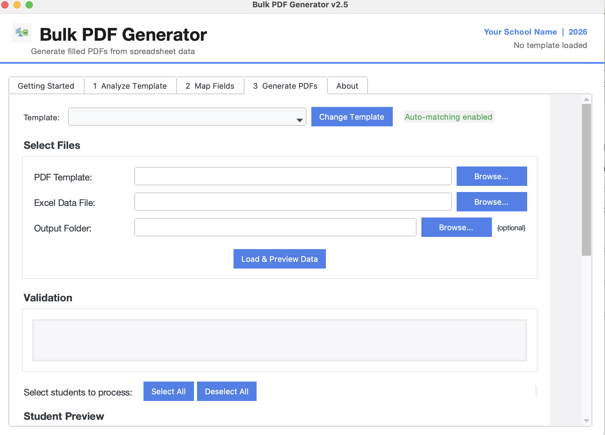
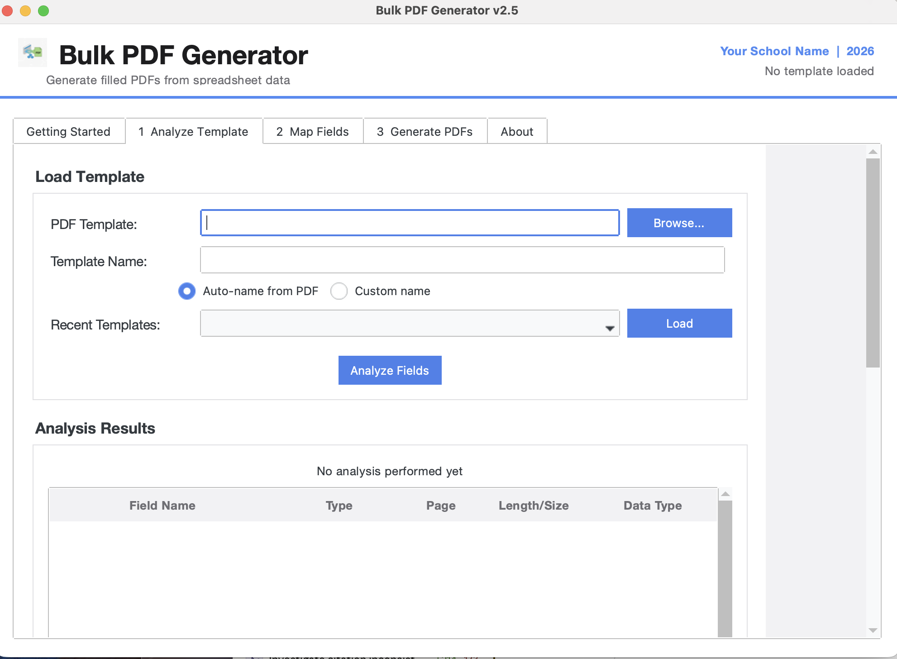

Batch-fill PDF forms from spreadsheet data. Turn hours of manual data entry into a single click.

Generate hundreds of filled PDFs from a single spreadsheet. Each row produces one complete PDF.
Scans any PDF form and maps every field automatically. No manual configuration needed.
Single-file download. No Python, no installation, no IT support required. Download and double-click.
VCAA exam forms, TAFE enrolments, leave applications, compliance forms, consent forms, and more.
Automatically detects date fields and converts Excel serial numbers to DD/MM/YYYY format.
Save and reload configurations. Analyse once, generate forever.
